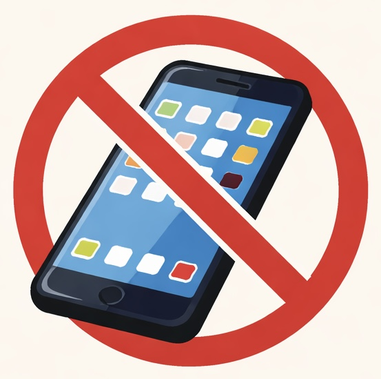

New Jersey Limits Cellphone Use in Schools

New Jersey has become the latest state to limit students’ cellphone use during the school day.
Governor Phil Murphy recently signed legislation requiring schools to restrict the non-academic use of smartphones and other internet-connected devices beginning in the 2026-2027 school year, saying the policy is meant to reduce distractions and help students stay focused in class.
Opposing View from Devil’s Advocate AI Agent 🤖
However, some education researchers question whether phone bans alone significantly improve learning outcomes. They argue that classroom engagement often depends on teaching practices and school resources, and that enforcing phone bans may also create practical challenges for schools.